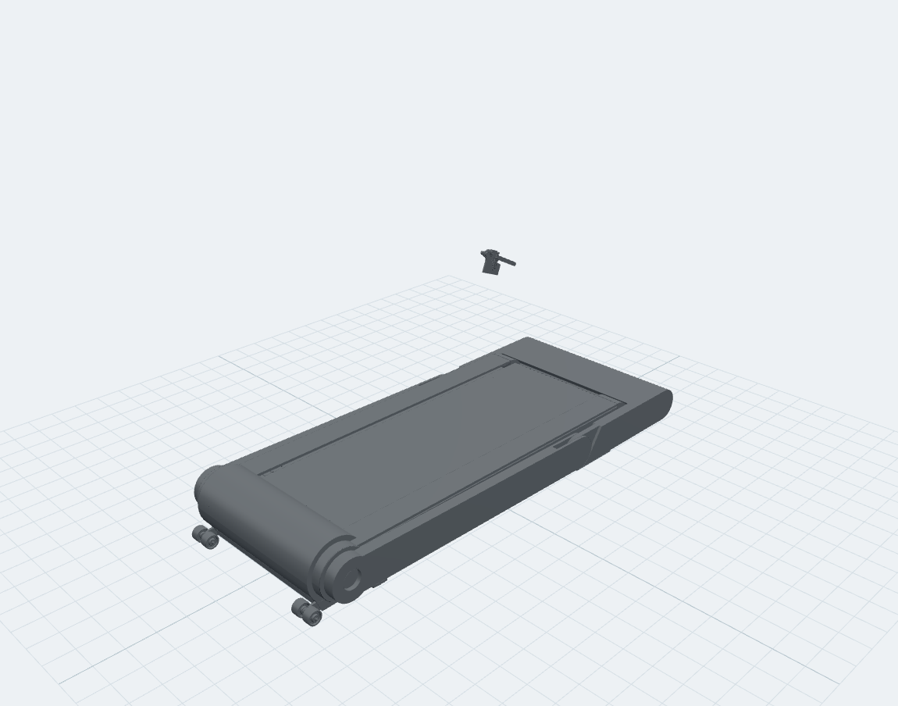

LIJIUJIA / CURRENT OPTIONS / 2026.11.12
凌序 · 曜影 · 灵伴
当前仅保留这三个设计选项。下方原图为同事方案资料；尚未选定最终量产方案。
凌序 · Linear
以凌序外观语言发展新旗舰。

曜影 · Origin
转轴立柱方向；新增有机盖版真实 STEP 模型。

灵伴 · Lynmate
大 C 造型方向；与曜影分别维护。

凌序 · Linear
曜影 · Origin
有机盖版 · 同事 STEP 还原
这份 STEP 和上部扶手转轴细节讨论均归属曜影。模型按源文件几何转换，保留有机盖版本；没有套用灵伴大 C，也未实施此前提出的圆角包覆建议。

打开 3D · 旋转 / 缩放 / 部件查看 ↗
当前 STEP 显示收合姿态，另有一组小件悬空，均保留源坐标；这不是展开状态。使用、爬坡与竖放尚未补齐；静态收合模型不证明折叠过程或干涉已验证。当前项目主路线仍为全域跑台、下置电机；有机盖版作为本次同事来源版本单列。
灵伴 · Lynmate